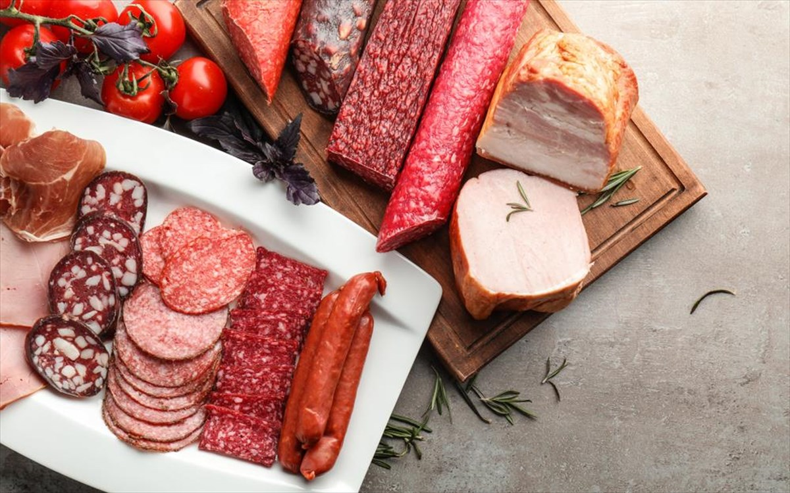

Κάνει να τρώμε αλλαντικά;
Άραγε κάνει να τρώμε αλλαντικά ή είναι επικίνδυνα; Τι είναι τα αλλαντικά;
Όλα τα προϊόντα αλλαντοποιΐας ανήκουν στην κατηγορία του επεξεργασμένου κρέατος.
Επεξεργασμένο θεωρείται το λευκό ή κόκκινο κρέας το οποίο
...Διαβάστε περισσότερα
Πρωινά χαμηλού γλυκαιμικού φορτίου
Πώς να φτιάξουμε ενα πρωινό χαμηλού γλυκαιμικού φορτίου; Σε κάθε περίπτωση επιλέγω υδατάνθρακες με υψηλή περιεκτικότητα σε διαιτητικές ίνες (π.χ. φρυγανιές 100% ολικής ή κριθαρένια παξιμάδια ή ψωμί 100% ολικής).
Αν θέλω αλμυρό πρωινό, προσθέτω πρωτεΐνη και κάποιο φρούτο ολόκληρο για να μη χάσω τις ίνες του.
...Διαβάστε περισσότερα